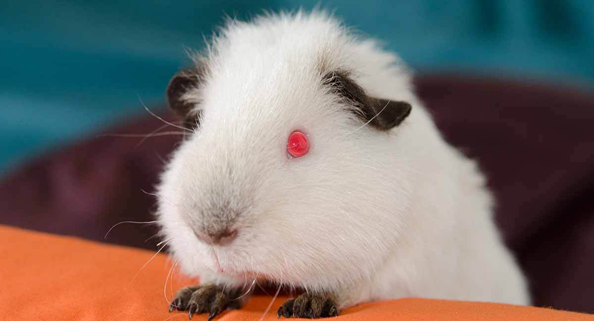
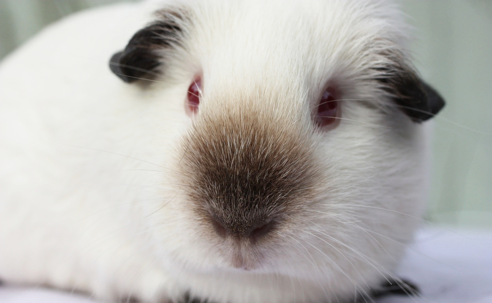
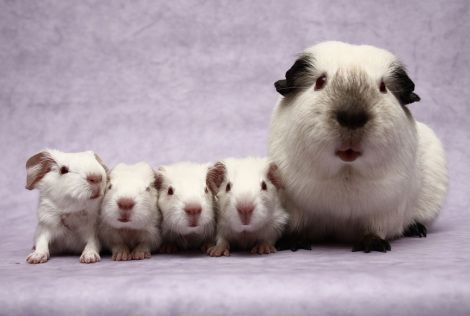
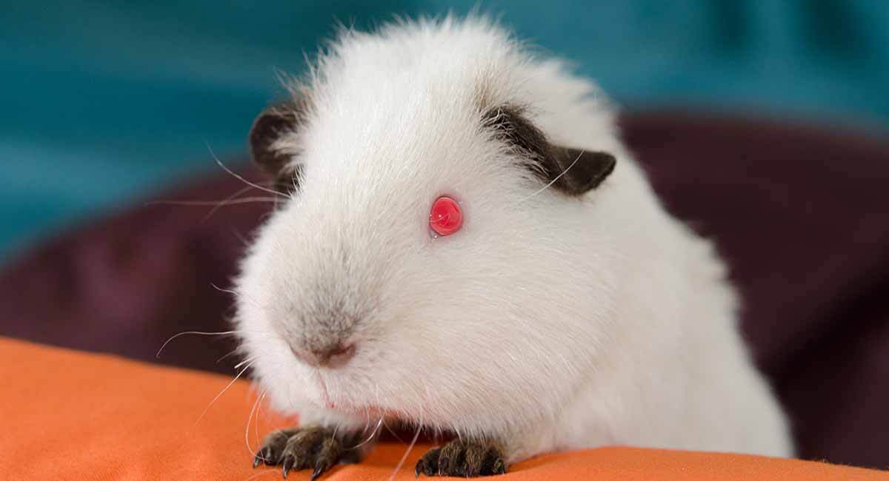
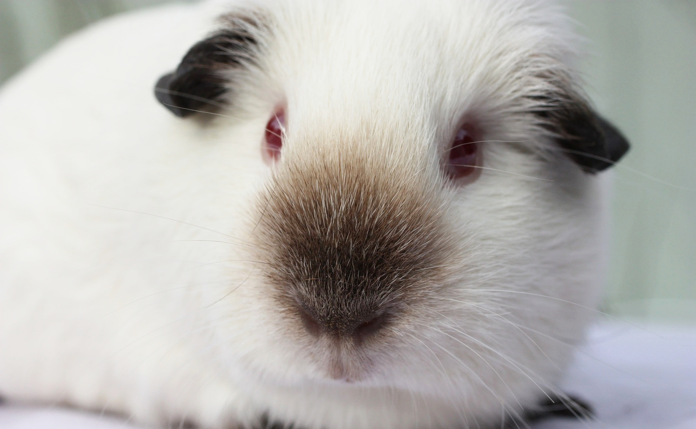
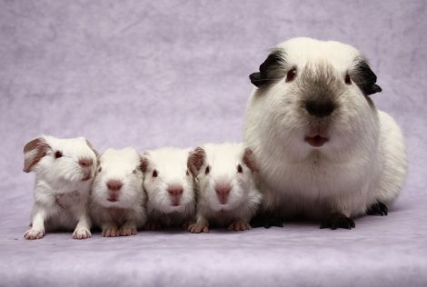
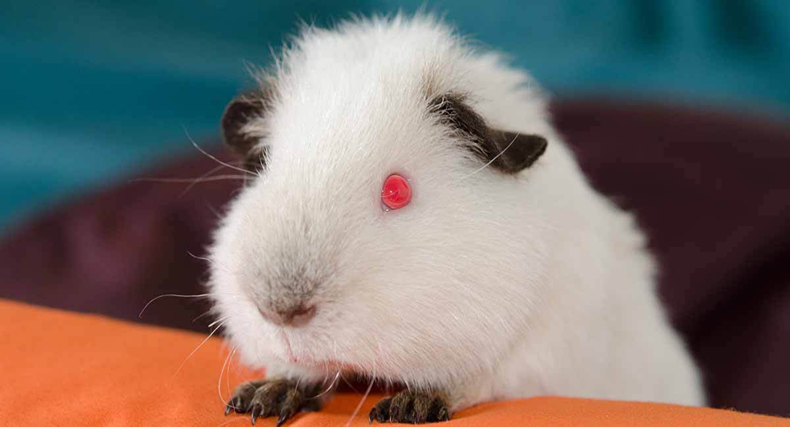
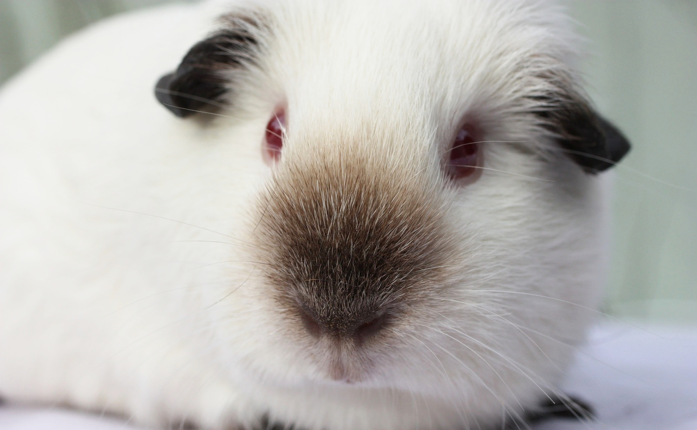
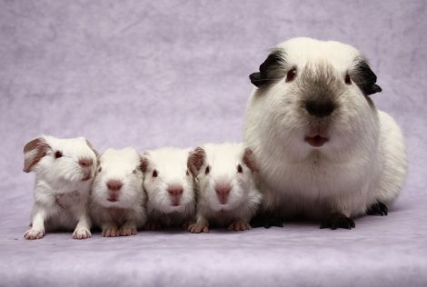

Гімалайські мурчаки – ще не дуже відомі, так як ця порода була виведена не так давно. Морські гімалайські свинки є свинками-альбіносами, у яких пігментована шкіра та шерсть на деяких ділянках, наприклад, морда, лапи, вушка. Колір маски на мордочці, вухах і лапах варіюється від світлого коричневого до чорного.
Гімалайська свинка не має пігментів в очах, від цього очі справляють враження червоних, оскільки нам видно не просто пігмент, а мережу кровоносних судин. Маска на морді гімалайської свинки, в ідеалі грушоподібної форми, розташована виключно посередині мордочки, різко переходячи в білу частину. Чорні свинки мають маску чорного кольору, а коричневі свинки – світло-коричневу.
Шерсть гімалайської свинки біла. Найбільш яскраво-білих свинок вище цінують, незважаючи на те, що це дуже залежно від того, як почувається свинка і який її вік, а також важливі умови її утримання. Крихітки гімалайських морських свинок з'являються на світ абсолютно білі, ділянки з пігментацією з'являються пізніше і остаточно формуються лише до 6 місяців. Контрастність білого кольору з пігментованими ділянками залежить від того, як утримують морську свинку.
Добре темніє пігмент у тому випадку, якщо свинку утримують у прохолодному приміщенні. Від цього залежить і яскравість білого. Влітку, коли сухо і тепло, пігментоване забарвлення стає слабшим, тоді як білий колір не слабшає. Ослаблення білого відбувається під час вагітності свинки, стресу внаслідок виставки чи травми.


